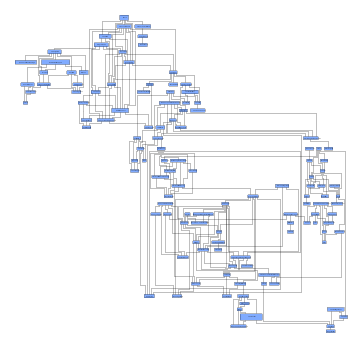
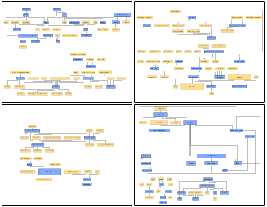
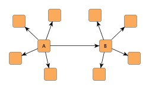
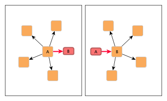
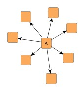
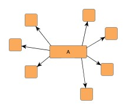
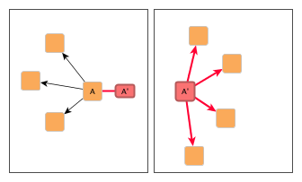

| Multi-page Layout | ||
|---|---|---|
| Prev | Chapter 5. Automatic Graph Layout | Next |
This section presents the multi-page layout concept.
Multi-page layout enables the presentation of large graphs in an easily navigable and clear manner. It means breaking apart a given graph into a set of smaller graphs so that each layout of a small graph fits into a given width and height.
A multi-page layout with its set of small graphs avoids common presentation problems of large graphs with many nodes and edges. Problems, like, e.g., graph elements that are hardly discernible because of a small zoom level when viewing/printing the entire graph, or long edge paths that are hard to follow over numerous poster pages in a poster print-out of a graph.
The algorithm aims to find small graphs whose layout utilizes the specified width and height to the best extent. It puts as many as possible elements from the original graph into each small graph, thus minimizing the number of resulting small graphs.
Figure 5.97. Multi-page layout sample
|

|

|
| Original diagram. | Four (out of eight) small graphs that result from running multi-page layout. Blue nodes are directly from the original diagram, yellow nodes are additional proxy elements (see text). |
Breaking apart the original graph is done by sub-dividing it and, for each connection between two nodes that is cut, introducing additional nodes and edges as proxy elements in both involved smaller graphs. The proxy elements in either small graph stand in for the original edge and can be used as a means to get to the corresponding other small graph.
Sub-division can furthermore also take place at the node level, where nodes with many connections are split up into multiple "parts" that are distributed to different small graphs. This also introduces additional nodes and edges as proxy elements in the involved smaller graphs.
Carefully observe that, in contrast to the major layout algorithms of the yFiles library, multi-page layout produces not a single graph as its result, but instead a set of graphs.
The original graph that is given to the algorithm is also called the model graph. The smaller graphs that result from sub-dividing and augmenting the model graph are referred to as the page graphs. The additional nodes and edges that are introduced to represent an edge from the original graph between two nodes which are in different page graphs after sub-division, are called connector nodes and connector edges, respectively, or also often simply connectors.
Figure 5.98. Replacing an edge and introducing connector nodes and connector edges
|

|

|
| Connected nodes A and B with their neighbors in the original graph. | A and B in different page graphs. Both nodes have an additional connector node (emphasized, smaller) and an additional connector edge (emphasized) that stand in for the connecting edge of the original graph. |
Further nodes and edges are added when a node with many connections needs to be split up into multiple parts in order to be able to assign these parts to different page graphs. Each of the parts gets an equal share of the original neighbor nodes (roughly).
The additional new parts of the original node are called proxy nodes, all edges incident to them are called proxy edges. They represent the connections between the original node and its neighbors. For each of the proxy nodes in other page graphs, the original node gets a so-called proxy reference node as a new neighbor. The connecting edge to this new neighbor is called proxy reference edge.
Figure 5.99. Splitting up a node and introducing a proxy node, proxy edges, a proxy reference node, and a proxy reference edge
|

|

|

|
| Original node with its neighbors. | The node (conceptually) before the split. | The node split up into two "parts," A and A', in different page graphs, each having (roughly) one half of the original neighbors. A' (emphasized, normal size) is a proxy node of the original node A. It is connected to the original node's neighbors by means of proxy edges (emphasized) that stand in for the connecting edges of the original graph. A has an additional proxy reference node (emphasized, smaller) that references proxy node A'. The connecting edge is a proxy reference edge (emphasized). |
The following table lists the relevant classes and interfaces for multi-page layout:
Table 5.67. Relevant classes for this algorithm
| Classname | Description |
|---|---|
| MultiPageLayouter |
Main algorithm. See the description below. |
| MultiPageLayout |
The container to hold the results of a multi-page layout, i.e., the page graphs. See Related Classes and Interfaces. |
| ElementFactory |
Interface that defines element creation callbacks for customization of the additional nodes and edges that augment the page graphs. See Related Classes and Interfaces. |
Class MultiPageLayouter is the
main class for calculating multi-page layouts.
It generates a set of so-called page graphs whose layouts each fit into a given
width and height.
To calculate the actual layouts of the page graphs, it relies on a core layout algorithm.
is the
main class for calculating multi-page layouts.
It generates a set of so-called page graphs whose layouts each fit into a given
width and height.
To calculate the actual layouts of the page graphs, it relies on a core layout algorithm.
Class MultiPageLayouter uses a scheme that is different from that of the yFiles major layout algorithms in several ways:
A multi-page layout is started using:
| Layout Invocation | |
| API | MultiPageLayout calcLayout(LayoutGraph graph) |
| Description | Method to start multi-page layout. |
The result of the algorithm is returned in a MultiPageLayout container object. The original graph that is given to MultiPageLayouter is not modified in any way.
Note that starting a multi-page layout in buffered mode
or using convenience class Graph2DLayoutExecutor
implicitly calls MultiPageLayouter's doLayout method (originally defined in interface Layouter).
This method, however, does not return a MultiPageLayout object, i.e., the result
of the layout calculation is not accessible without further setup.
method (originally defined in interface Layouter).
This method, however, does not return a MultiPageLayout object, i.e., the result
of the layout calculation is not accessible without further setup.
The result of a multi-page layout calculation cannot be returned through MultiPageLayouter's doLayout method.
Instead, the MultiPageLayout container object needs to be retrieved through an implementation
of interface LayoutCallback , which
needs to be registered with MultiPageLayouter using:
, which
needs to be registered with MultiPageLayouter using:
void setLayoutCallback(LayoutCallback callback) |
|
| Description | Setter method for a LayoutCallback implementation. After a multi-page layout has completed, the implementation gets called and receives the MultiPageLayout container object holding the resulting page graphs. |
A simple LayoutCallback implementation is used in tutorial demo application MultiPageLayoutDemo.java:
Example 5.40. LayoutCallback implementation
static class SimpleLayoutCallback implements LayoutCallback {
MultiPageLayout result;
public void layoutDone(MultiPageLayout result) {
this.result = result;
}
public MultiPageLayout pop() {
MultiPageLayout result = this.result;
this.result = null;
return result;
}
}
Note that the resulting page graphs in the MultiPageLayout container object are
all of type LayoutGraph .
To get graphs of type Graph2D
.
To get graphs of type Graph2D from the page
graphs, to show them in a Graph2DView
from the page
graphs, to show them in a Graph2DView , each
LayoutGraph needs to be copied using class GraphCopier.
The MultiPageGraph2DBuilder class from tutorial demo application MultiPageLayoutDemo.java
shows how this can be done.
, each
LayoutGraph needs to be copied using class GraphCopier.
The MultiPageGraph2DBuilder class from tutorial demo application MultiPageLayoutDemo.java
shows how this can be done.
To calculate a multi-page layout, class MultiPageLayouter needs
The core layout algorithm can be set using the setCoreLayouter method (originally defined in interface LayoutStage):
method (originally defined in interface LayoutStage):
Example 5.41. Setting the core layouter
// Create multi-page layout algorithm. MultiPageLayouter mpl = new MultiPageLayouter(); // Create and set core layout algorithm. mpl.setCoreLayouter(new IncrementalHierarchicLayouter());
MultiPageLayouter uses unique IDs for the elements from the original graph to relate page graph elements to their originals from the model graph. In particular, the IDs are necessary to collect the information that is returned for connectors and proxy elements as part of the MultiPageLayout container.
Unique IDs for nodes and edges can be specified using the data provider look-up
keys NODE_ID_DPKEY and EDGE_ID_DPKEY
and EDGE_ID_DPKEY ,
respectively, unique IDs for node labels and edge labels using the look-up keys
NODE_LABEL_ID_DPKEY
,
respectively, unique IDs for node labels and edge labels using the look-up keys
NODE_LABEL_ID_DPKEY and EDGE_LABEL_ID_DPKEY
and EDGE_LABEL_ID_DPKEY ,
respectively.
,
respectively.
The following code shows the canonical approach to provide unique IDs for graph elements. This scheme is also used in tutorial demo application MultiPageLayoutDemo.java:
Example 5.42. Canonical setup of mandatory unique IDs for graph elements
void setupCanonicalUniqueIDs(Graph modelGraph) {
// A data provider that simply returns the given object itself as its unique
// ID.
final DataProvider idProvider = new DataProviderAdapter() {
public Object get(Object dataHolder) {
return dataHolder;
}
};
// Use this data provider for all kinds of graph elements that need unique IDs.
modelGraph.addDataProvider(MultiPageLayouter.NODE_ID_DPKEY, idProvider);
modelGraph.addDataProvider(MultiPageLayouter.EDGE_ID_DPKEY, idProvider);
modelGraph.addDataProvider(MultiPageLayouter.NODE_LABEL_ID_DPKEY, idProvider);
modelGraph.addDataProvider(MultiPageLayouter.EDGE_LABEL_ID_DPKEY, idProvider);
}
In summary, the setup of MultiPageLayouter looks like this:
Example 5.43. Setup of MultiPageLayouter
// 'modelGraph' is of type y.layout.LayoutGraph. // Create multi-page layout algorithm. MultiPageLayouter mpl = new MultiPageLayouter(); // Create and set core layout algorithm. IncrementalHierarchicLayouter ihl = new IncrementalHierarchicLayouter(); mpl.setCoreLayouter(ihl); // Set up unique IDs for graph elements. setupCanonicalUniqueIDs(modelGraph); SimpleLayoutCallback callback = new SimpleLayoutCallback(); mpl.setLayoutCallback(callback); // Calculate multi-page layout. (new BufferedLayouter(mpl)).doLayout(modelGraph); // Get the resulting page graphs. MultiPageLayout result = callback.pop(); // Now, do something with 'result'... // Remove the data providers registered by setupCanonicalUniqueIDs. modelGraph.removeDataProvider(MultiPageLayouter.EDGE_LABEL_ID_DPKEY); modelGraph.removeDataProvider(MultiPageLayouter.NODE_LABEL_ID_DPKEY); modelGraph.removeDataProvider(MultiPageLayouter.EDGE_ID_DPKEY); modelGraph.removeDataProvider(MultiPageLayouter.NODE_ID_DPKEY);
| Page Size | |
| API | void setMaxPageSize(YDimension maxPageSize) |
| Description | Specifies the page dimensions, i.e., the width and height into which the layout of a page graph needs to fit. |
By default, MultiPageLayouter distributes the nodes from the original graph to the
page graphs automatically.
By means of a data provider that is bound to the graph using the look-up key NODE_CLUSTER_ID_DPKEY ,
nodes of the original graph that should end up in the same page graph can be assigned
an object that serves as an ID.
MultiPageLayouter then tries to distribute nodes with the same ID to the same page
graph.
,
nodes of the original graph that should end up in the same page graph can be assigned
an object that serves as an ID.
MultiPageLayouter then tries to distribute nodes with the same ID to the same page
graph.
| Maximal Duration | |
| API | void setPreferredMaximalDuration(long duration) |
| Description |
Sets the preferred maximal duration of the layout process in milliseconds. By default, the algorithm runs without time restriction. Higher values enable the algorithm to find a smaller set of page graphs, where each makes better use of the available page size. Also, there are less connectors and proxy elements in the page graphs. |
Class MultiPageLayout is the container
to hold the results of the multi-page layout.
It is returned by the calcLayout method of class MultiPageLayouter.
is the container
to hold the results of the multi-page layout.
It is returned by the calcLayout method of class MultiPageLayouter.
MultiPageLayout provides access to all page graphs from the layout result and enables
identification of original graph elements, connectors, and proxy elements.
This information is encapsulated in NodeInfo and EdgeInfo
and EdgeInfo objects, respectively
NodeLabelInfo
objects, respectively
NodeLabelInfo and EdgeLabelInfo
and EdgeLabelInfo objects.
objects.
The following code shows how to use NodeInfo objects to find all indexes of page graphs that are connected to the first page graph from a multi-page layout result:
Example 5.44. Querying the MultiPageLayout
// 'result' is of type y.layout.multipage.MultiPageLayout.
// Get the first from the resulting page graphs.
LayoutGraph firstGraph = result.getPage(0);
for (NodeCursor nc = firstGraph.nodes(); nc.ok(); nc.next()) {
Node node = nc.node();
// Get the NodeInfo object for the current node.
NodeInfo ni = result.getNodeInfo(node);
// Is the current node a connector node?
if (ni.getType() == NodeInfo.TYPE_CONNECTOR) {
// Get its opposite connector node.
Node oppositeConnectorNode = ni.getReferencingNode();
// Get the opposite's node NodeInfo object.
NodeInfo ni2 = result.getNodeInfo(oppositeConnectorNode);
// Find out the index of the page graph the opposite node is in.
int otherPage = ni2.getPageNo();
System.out.println("Connector node (" + node +
") connects to page graph at index: " + otherPage);
}
}
During the sub-division process, class MultiPageLayouter uses an implementation
of interface ElementFactory as
a factory to create the
as
a factory to create the
that replace elements of the original graph and augment the page graphs.
Class DefaultElementFactory is
the predefined default implementation, which provides convenient implementations
of all callback methods.
is
the predefined default implementation, which provides convenient implementations
of all callback methods.
Tutorial demo application MultiPageLayoutDemo.java shows how to use class MultiPageLayouter to sub-divide large graphs into smaller bits of navigable information.
Class MultiPageLayouter knows a number of data provider keys which are used to retrieve supplemental layout data for a graph's elements. The data is bound to the graph by means of a data provider which is registered using a given look-up key. Table 5.68, “Data provider look-up keys” lists all look-up keys that MultiPageLayouter tests during the layout process in order to query supplemental data.
Binding supplemental layout data to a graph is described in the section called “Providing Supplemental Layout Data”.
Table 5.68. Data provider look-up keys
| Key | Element Type | Value Type | Description |
|---|---|---|---|
| NODE_ID_DPKEY |
Node | Object | For each node an Object that is used as a unique ID. |
| EDGE_ID_DPKEY |
Edge | Object | For each edge an Object that is used as a unique ID. |
| NODE_LABEL_ID_DPKEY |
NodeLabelLayout | Object | For each NodeLabelLayout instance an Object that is used as a unique ID. |
| EDGE_LABEL_ID_DPKEY |
EdgeLabelLayout | Object | For each EdgeLabelLayout instance an Object that is used as a unique ID. |
| NODE_CLUSTER_ID_DPKEY |
Node | Object | For each node an arbitrary Object indicating its cluster ID. This ID is used to find nodes that preferably should be in the same page graph. |
| EDGE_TYPE_DPKEY |
Edge | Object | For each edge an arbitrary Object indicating its (application-specific) type. |
|
Copyright ©2004-2015, yWorks GmbH. All rights reserved. |